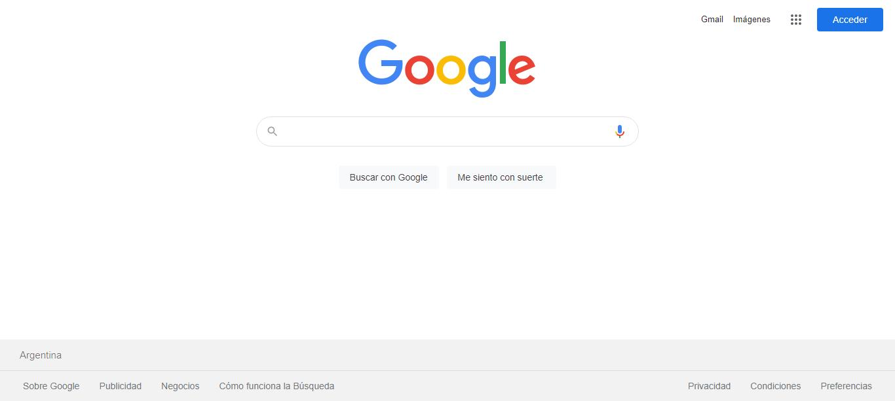

Get to the home page16/06/2021 15:23:08
|
Search for Selenium16/06/2021 15:23:09
org.openqa.selenium.remote.RemoteWebDriver.findElement(RemoteWebDriver.java:327)16/06/2021 15:23:13
Cannot locate an element using xpath=//input[@class='gLFyf gsfi']
For documentation on this error, please visit: https://www.seleniumhq.org/exceptions/no_such_element.html
Build info: version: '3.141.59', revision: 'e82be7d358', time: '2018-11-14T08:17:03'
System info: host: 'DESKTOP-9IB04RQ', ip: '192.168.1.103', os.name: 'Windows 10', os.arch: 'amd64', os.version: '10.0', java.version: '15.0.2'
Driver info: driver.version: RemoteWebDriver16/06/2021 15:23:13
Get to the home page16/06/2021 15:23:27

Search for Selenium16/06/2021 15:23:27
Validate that the line www.selenium.dev exists16/06/2021 15:23:29
The Element is displayed16/06/2021 15:23:29
|